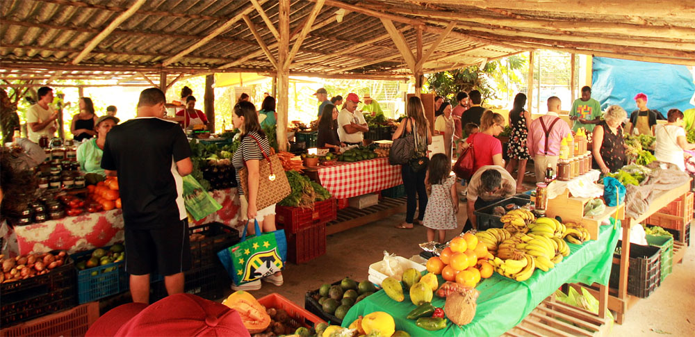
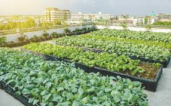
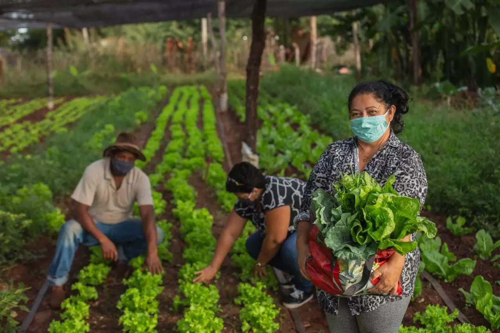

Galeria





Nosso objetivo é destacar como o campo e a cidade são interdependentes. O projeto promove iniciativas que conectam agricultura, consumo consciente e comunidades urbanas, celebrando essa relação vital com sustentabilidade.